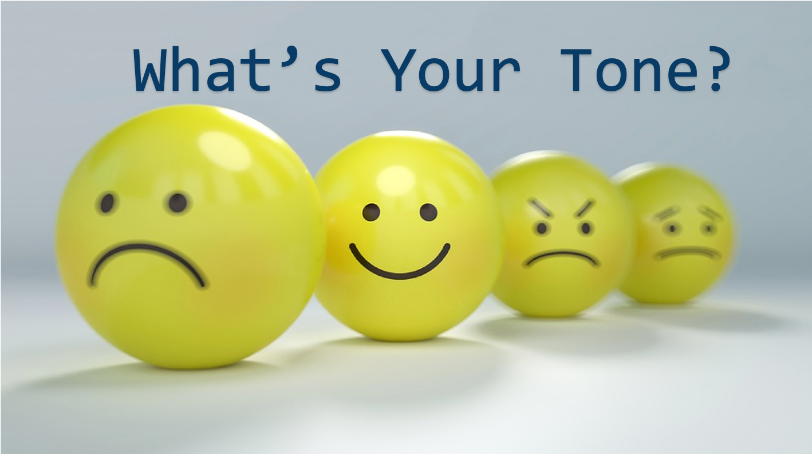

Have you ever sent a text message that was misunderstood?
When we communicate via text message or email,
we lack the benefit of facial expression and body language. Our meaning is often misinterpreted.
Lost in Textlation is a tool to help us check the tone of our text communications before we hit
“send”.
To check the tone of your text, press the logo above to begin.